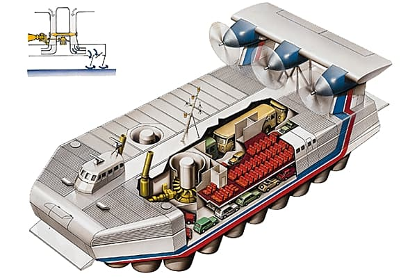
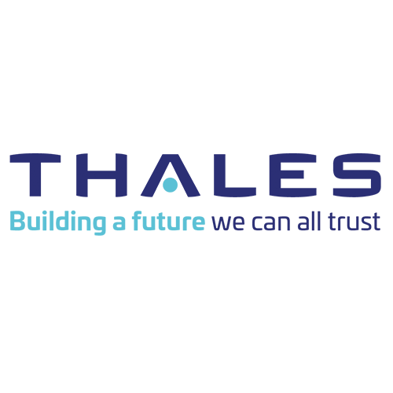
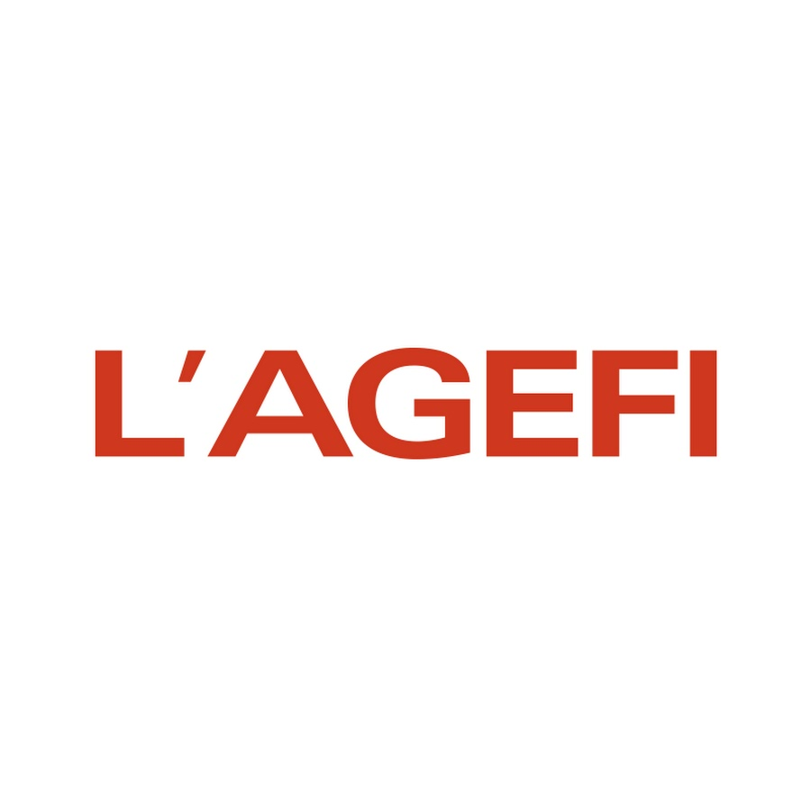
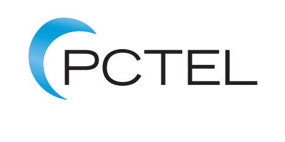

À propos de moi
Bienvenue sur mon site ! Découvrez ici mon portfolio : mon parcours professionnel, mes compétences, mes expériences...
Curieux, rigoureux et passionné par la donnée, je m’intéresse aux problématiques de décision et d’analyse dans des contextes variés (industrie, santé, finance, etc.).
Mon objectif : contribuer à des projets porteurs de sens grâce à la data, en combinant réflexion analytique et outils techniques.
Mes projets
2024 – Power BI : Tableau de bord sur les accidents routiers selon la météo.
Outils : Power BI, Excel
Compétences : Data cleaning, jointures, modélisation de données, visualisation, storytelling.

2024 – R : Analyse statistique sur la performance des athlètes aux JO 2024.
Outils : R, ggplot2
Compétences : Analyse exploratoire, régression, clustering, data visualization.
2024 – R : Notebook R sur la description et la prévision de données temporelles en santé publique et épidémiologie.
Outils : R, ggplot2, forecast, tsibble
Compétences : Séries temporelles, modélisation ARIMA, visualisation de tendances, interprétation de données épidémiologiques.
2024 – R Shiny : Tableau de bord interactif sur les données de criminalité aux États-Unis basé sur une ACP.
Outils : R, Shiny, FactoMineR, ggplot2
Compétences : Analyse en composantes principales, exploration de variables multivariées, création d'interfaces dynamiques, data storytelling.

2023 – Projet Ingénieur : Construction d’un aéromouleur électromagnétique.
Outils : SolidWorks, Arduino
Compétences : Travail d’équipe, prototypage, gestion de projet, rédaction de rapport technique.

2022 – Programmation C# : Jeu de mots-mêlés avec interface et système de score.
Outils : Visual Studio, C# WinForms
Compétences : Algorithmique, interface utilisateur, gestion d'événements, structuration de code.
Mes expériences

2025 – THALES LAS OME FRANCE (Élancourt)
Stage Data Analyst Obsolescence
Missions : Nettoyage et croisement de fichiers Excel, création d’un tableau de bord Power BI, analyse de la criticité des stocks obsolètes, analyse BOM & SAP, prévisions MCO et PSI.
Compétences : Power BI, Excel avancé, modélisation, automatisation des rapports, compréhension du cycle de vie des composants, gestion de projet décisionnel.

2024 – L’AGEFI (Paris)
Gestionnaire base de données – Pôle Data & IA
Missions : Mise à jour et maintenance de bases de données financières, structuration de flux de données, documentation des processus, utilisation d’outils SQL et Excel.
Compétences : SQL, Excel, rigueur, travail en équipe, qualité des données.

2023 – AXA France IARD (Nanterre)
Technicien indexation
Missions : Traitement des flux documentaires numériques, affectation des données aux bons dossiers, respect des délais.
Compétences : Organisation, précision, autonomie, gestion des priorités.

2021–2022 – PC'TEL (Dreux)
Assistant technicien & ventes
Missions : Réparation hardware/software, service client, assistance à la vente.
Compétences : Dépannage informatique, sens du relationnel, écoute, pédagogie.